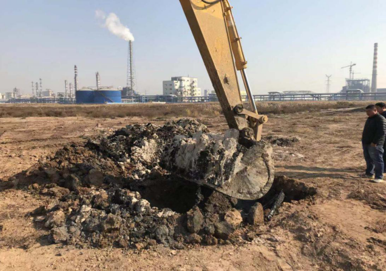
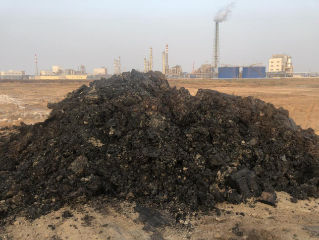
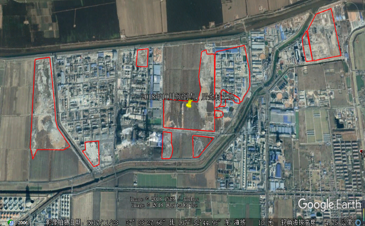

山东省淄博市企业假整改 政府真销号
2017年8月，第一轮中央环境保护督察期间，群众数次举报淄博市桓台县博汇集团存在非法处置危险废物、污泥随处乱倒和淄博市桓台县山东辰龙集团非法填埋污泥等问题。此次“回头看”发现，博汇集团非法填埋各种工业固体废物的违法行为仍未停止，累计填埋包括危险废物在内的各种工业固体废物达数百万吨；山东辰龙集团非法填埋的数十万吨污泥依然如故，污染场地没有修复，持续威胁周边环境。
一、基本情况
山东博汇集团有限公司是集化工、造纸为一体的大型企业集团，其所属淄博桓台马桥产业园投产项目有：100万吨/年的造纸项目（上市板块）、60万吨/年液碱项目、26万吨/年环氧氯丙烷项目、22.5万吨/年己二酸项目、20万吨/年己内酰胺项目、13万吨/年丙烯腈项目、50万吨/年工程塑料合金项目。此外，还有150万吨/年的造纸项目正在建设。2017年8月中央环境保护督察期间，群众信访举报称博汇集团下属企业污泥随意倾倒，危险废物处置不规范，严重污染环境。桓台县政府向中央环境保护督察组反馈称未发现企业有非法填埋、倾倒固体废物等行为，淄博市于2018年7月确认该举报问题已完成整改并销号。
山东辰龙集团位于淄博市桓台县田庄镇，涉及化工、造纸等多个行业，该企业长期以来将污水处理厂污泥倾倒填埋在小寨村东南角废弃窑湾及周边农田。非法填埋污泥超过25万立方米，企业未采取任何有效整改措施，仅对填埋场表面覆土，一埋了之。桓台县政府失察失管、把关不严，虚报完成整改，致使群众反映的环境污染问题至今未得到解决。
二、主要问题
（一）长期非法填埋工业固体废物。博汇集团长期以来将污水处理厂污泥、造纸白泥、化工废盐等工业固体废物非法填埋于厂区和租用的农田内，所有非法填埋场地均无任何污染防治措施，填埋量达350万吨之多，且基本无台账记录。仅有的台账资料显示，2013年以来，非法填埋的污水处理厂污泥达73.3万吨，第一轮中央环境保护督察后，仍将20万吨污水处理厂污泥混杂着其他工业固体废物填埋在租用的农田内。

图1 在博汇集团厂区污泥堆场下挖掘出来的黑色焦油状物质
经初步核实，这些填埋物种类多、数量大，危害性强，督察组在一块填埋场地随机选取5个点位进行挖掘，发现棕黑色油状物和其他颜色各异的工业固体废物，散发出强烈的刺激性气味。开挖点渗滤液化学需氧量浓度高达25300毫克/升，氨氮浓度280毫克/升，并检出蒽、三氯甲烷、苯、三溴甲烷、对二甲苯等多种有毒有害物质。
图2 挖掘出来的黑色焦油状物质散发浓烈的刺激性气味
现已查明的6个非法填埋点占地总面积达2600亩，其中约830亩已经被用作有关项目建设，但山东海美侬项目咨询有限公司编制项目环评报告时，对如此严重的环境安全隐患只字未提。（二）中央环境保护督察后仍违法处置危险废物。督察发现，博汇集团每年产生各类危险废物数万吨，但其危险废物管理处置极不规范。第一轮中央环境保护督察后，博汇集团仍然继续非法处置危险废物，将重组分卤代烃等危险废物在普通的锅炉中焚烧，不符合《危险废物焚烧污染控制标准》有关要求，对大气环境造成污染。
根据《中华人民共和国水污染防治法》，博汇集团生产环氧氯丙烷产生的有毒有害废水应分类收集、单独处理；对照《国家危险废物名录》，与之对应的废水处理产生的污泥属于危险废物（HW45）。但博汇集团长期将环氧氯丙烷项目产生的废水与企业其它化工废水、造纸废水、电厂冷却水混合处理，产生的含危险废物的混合污泥作为一般工业固体废物进行非法填埋，已造成严重的环境污染。
2018年6月，山东省环境科学研究设计院有限公司受博汇集团委托，对企业废水处理产生的污泥进行危险特性鉴别。出具的《危险特性鉴别报告》未对污水处理厂的废水来源进行全面分析，未将混入其中的化工废水纳入评价，出具的鉴别报告严重失实，成为博汇集团非法处置危险废物的挡箭牌。

图3 博汇集团非法填埋固体废物位置示意图（红线内为填埋区域）
（三）当地政府以罚代管，整改销号沦为形式。2013年以来，桓台县环境保护部门先后对博汇集团工业固体废物污染问题进行了24次处罚，但只罚未改，整而不治，最终不了了之，致使该企业环境违法行为长期得不到制止。2017年8月，对中央环境保护督察交办的群众举报，桓台县不是认真查处，而是隐瞒实情，反馈称博汇集团污水处理厂污泥暂存于山东天源热电有限公司的固废填埋场。督察组现场检查发现，该填埋场仅占地约60亩，早已填满。淄博市及桓台县党委、政府对中央环境保护督察交办问题整改不严不实，博汇集团所在乡镇将博汇集团整改完成销号资料上报桓台县，淄博市、桓台县层层做汇总，无人核实情，致使整个销号验收工作流于形式，博汇集团环境违法行为一直没有得到有效制止。
辰龙集团编造虚假材料、应付整改；桓台县政府明知辰龙集团填埋场没有防渗措施，却依据中材地质工程勘查研究院有限公司编制的虚假《评估报告》，认可企业敷衍整改措施，并层层上报销号，致使企业环境污染问题至今未得到解决。
三、原因分析
淄博市、桓台县对环境违法问题，不动真，不碰硬，长期以罚代管应付群众诉求。针对中央环境保护督察组交办的信访案件，淄博市、桓台县瞒报实情，放任企业违法行为，群众反映强烈。整改销号工作不严不实，层层失守，致使突出生态环境问题没有整改就被销号。
本文信息来源国家生态环境部
相关主题：
原文编辑: EHS资讯
原文链接: https://ehsinfo.cn/2019/08/13/淄博环保整改政企弄虚作假.html
版权声明: 转载请注明出处(必须保留作者署名及链接)